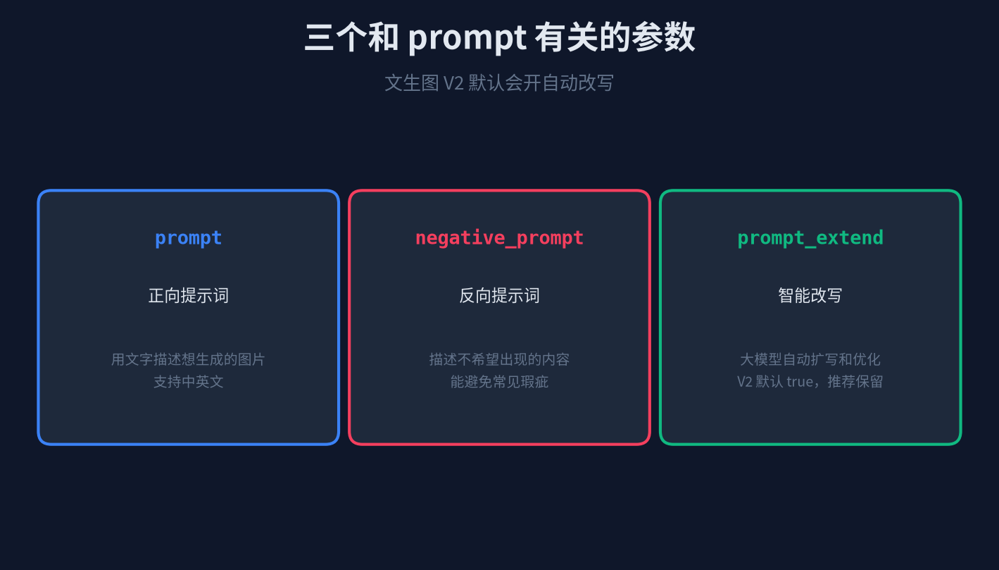
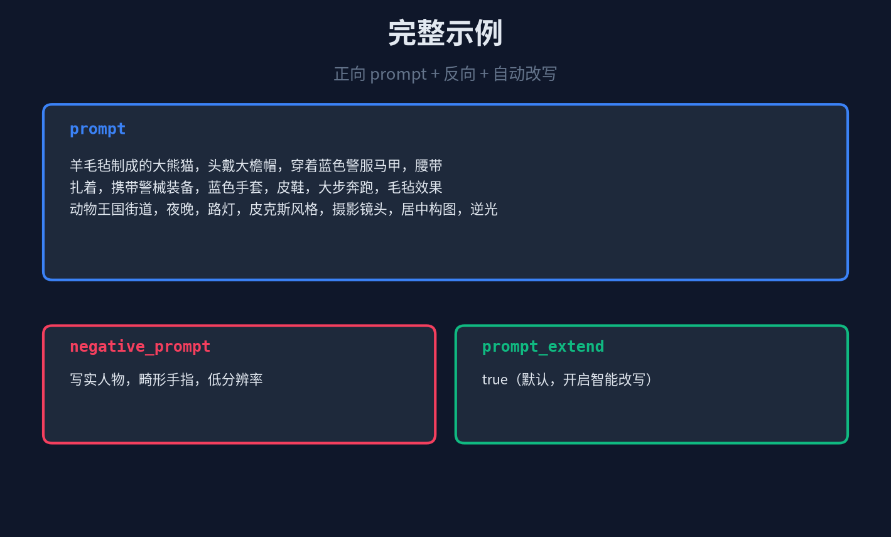

阿里云百炼的文生图 Prompt 指南在 10 月 10 号和文生文指南同一天更新。两篇是配套的姊妹篇。和文生文那篇的「六块框架 + 三个技巧」不同，文生图这篇的结构更直接——
参数 → 公式 → 词典。
它适用于万相 V1 和 V2，不过 V2 多了一个自动改写功能，开箱即用。
01
三个参数
文生图模型和 prompt 直接相关的参数就三个。

三个参数，一个正向一个反向一个自动改写。
prompt：正向提示词，用文字描述你想生成的图片。支持中英文，这是本篇主要讲的。
negative_prompt：反向提示词，写你不想在图里看到的东西。「人物」「畸形手指」「低分辨率」「水印」都是常见的反向词。
prompt_extend：V2 特有，开了之后大模型会自动扩写和优化你的 prompt。默认就是 true，**推荐保留默认配置**。你写得粗一点没关系，它帮你润色。
所以 V2 用户的最佳做法是：prompt 写得有骨架（按公式），negative_prompt 写上几个典型瑕疵，prompt_extend 不开手动关。
02
两条公式，按需选
阿里云给了两条公式。基础公式给新手，进阶公式给想追求更高画质的。差别不是"进阶更好"，而是进阶**多了四类更丰富的描述**。
基础打底，进阶往上盖。
基础公式：主体 + 场景 + 风格。够了。你第一次玩文生图，就按这三块写。「一只坐在咖啡店窗外的橘猫 + 雨后的城市街道 + 写实」这种结构，模型就能出像样的图。
进阶公式在基础之上再盖四层：主体和场景都加描述（「25 岁中国女孩、圆脸、穿民族服装」比「一个女孩」有用得多），再加上**镜头语言、氛围词、细节修饰**。
进阶公式完整写法：
主体（主体描述） + 场景（场景描述） + 风格（定义风格） + 镜头语言 + 氛围词 + 细节修饰
什么时候用基础、什么时候用进阶？看两件事：你的创意复杂度，以及你对结果的要求。只是想看看模型能出什么感觉——基础就好，自由度高、想象力强。已经知道要什么画面、想让图达到某种质感——往上盖进阶公式。
03
五大词典维度，每一项都有现成词
公式给了骨架，具体填什么词？阿里云在 Prompt 词典里列了五类常用维度和示例词。你可以直接抄，也可以当灵感自己找同义词。
五类维度，每类都有现成的示例词。
景别：特写、近景、中景、远景。想突出人脸表情用特写，想交代环境用远景。
视角：平视最日常，俯视适合表现整体规模，仰视能造高大感，航拍拍大场景。
镜头类型：微距拍细节、广角拍环境、长焦能虚化背景突出主体、鱼眼拍特殊扭曲感。
风格：阿里云词典列了写实、水彩、水墨、3D 卡通、粘土、废土、点彩画、超现实、折纸、工笔……远不止这些，模型还能理解更多。
光线：自然光最稳、逆光能勾轮廓、霓虹灯造都市夜景、氛围光铺浪漫。光线是决定氛围的那一层。
五类词典词可以叠着写。比如「中景 + 平视 + 长焦 + 写实 + 自然光」，就是一套很具体的画面规格。
04
一个完整示例
把进阶公式和五类词典叠起来写，再加上反向词和 V2 的自动改写：

完整的 V2 prompt 结构。
把它放进 API 调用里：
{ "input": { "prompt": "羊毛毡制成的大熊猫，头戴大檐帽，穿着蓝色警服马甲， 扎着腰带，携带警械装备，大步奔跑，毛毡效果， 动物王国街道，夜晚，路灯，皮克斯风格， 摄影镜头，居中构图，逆光", "negative_prompt": "写实人物，畸形手指，低分辨率" }, "parameters": { "prompt_extend": true } }
prompt_extend 默认就是 true，你甚至可以不写。negative_prompt 里挑三五个最容易踩的瑕疵写上就行。
05
总结
阿里云百炼这篇文生图 Prompt 指南，核心就两件事：
1. 两条公式打底。新手用「主体 + 场景 + 风格」，有经验往上盖「镜头语言 + 氛围词 + 细节修饰」。
2. 五类词典词填空：景别、视角、镜头类型、风格、光线。每一类都有现成示例可以抄。
再记两条细节：negative_prompt 写上几个常见瑕疵（畸形、低分辨率、水印），V2 的 prompt_extend 别关。
文生图 prompt 不是越长越好。先按公式搭骨架，再用词典填肉。骨架对了，自动改写会帮你润色。